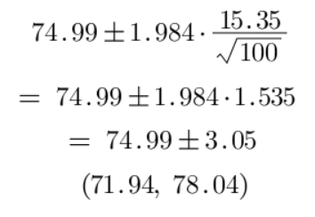
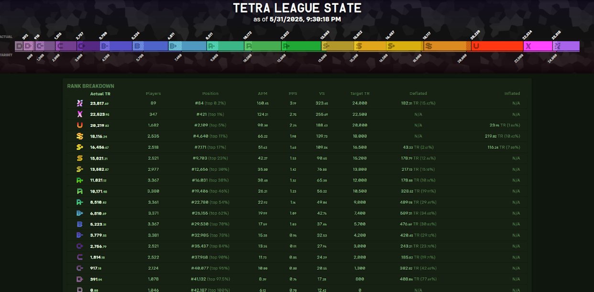

Do my recent scores match my TETR.IO rank?
TETR.IO is a competitive online Tetris-like game that ranks players based on their performance in ranked Tetra League matches. One key metric that judges one’s skill is the VS Score, which reflects the general strength of a player in each game.
I want to investigate if my average VS Score is consistent with my current rank of S- and see if my 100 most recent games proves my rank. In other words, I want to create a 95% confidence interval of my true average VS Score in TETR.IO, and then compare it with the average VS Score expected for each rank.
Since I want to create a confidence interval that contains the true mean VS Score, I will use a one-sample t-interval.
Checking Conditions:
- Randomness: Not formally random, but games were not cherry-picked and reflect natural gameplay.
- Normality: n = 100, so the CLT applies.
- Independence: Each game is independent due to online matchmaking variability.
One-Sample t-Interval Formula:

Given:
| Metric | Value |
|---|---|
| Mean VS Score | 74.99 |
| Standard Deviation | 15.35 |
| Sample Size | 100 |
| Degrees of Freedom | 99 |
| t* | 1.984 |
Plugging in the values gives the confidence interval: 
We are 95% confident that my true mean VS Score is between 71.94 and 78.04. For comparison, the benchmark average VS Score for S- rank players is 76.89. Since this value falls within our confidence interval, my recent performance appears consistent with my current rank.
